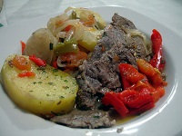

Esta receta es típica de el interior de Buenos Aires como lo es el bife nuestro de cada día es un imperativo de la cocina argentina que acompañó a la cocina criolla varias décadas
RECETA DEL INTERIOR DE BUENOS AIRES
Es bueno repasar que el bife a la criolla, plato casero o de bodegón
es una preparación hecha con bifes de carne vacuna, tomate, papas,
cebollas, ajo, morrón rojo, aceite, sal, pimienta y orégano. Y se hace siempre en una olla.
En una cacerola caliente con aceite cocine los bifes intercalándolos con las rodajas de tomate, condimente con sal y pimienta y
agregue el morrón junto con la cebolla, cocine unos minutos y añada las papas,
corrija nuevamente con sal y pimienta y agregue el pimentón, ajo picado, nuevamente bifes, rodajas
de tomate, morrón, papas, cebolla, sal, pimienta , pimentón, proceda del mismo modo hasta terminar de colocar todos los ingredientes,
luego tape la olla con un papillote y cocine a fuego suave sin revolver durante 30 minutos. A mitad de cocción agregue los huevos crudos,
condimente con sal y pimienta y espolvoree con perejil picado.

4 churrascos de bola de lomo
2 papas
1 zanahoria
1 cebolla
1/2 morrón
2 dientes de ajo
2 tomates
1 lata de arvejas
1/2 taza de pure de tomates
1 taza de caldo
Sal
Pimienta
Aceite
Los pasos son los siguientes:
Cortar los bifes en trozos
Colocar las mismas en una olla con aceite
Colocar las capas de verduras
Añadir encima el puré de tomate
Sin revolver, colocar la olla tapada a fuego alto
Cuando rompa hervor abrir la olla y revolver hasta mezclar todos los ingredientes
Volver a tapar dejando una pequeña abertura y dejar cocinando a fuego medio revolviendo cada tanto
Cuando falten 5 minutos para quitarlo del fuego agregar una lata de arvejas
Apagar el fuego y dejar reposar como mínimo 10 minutos